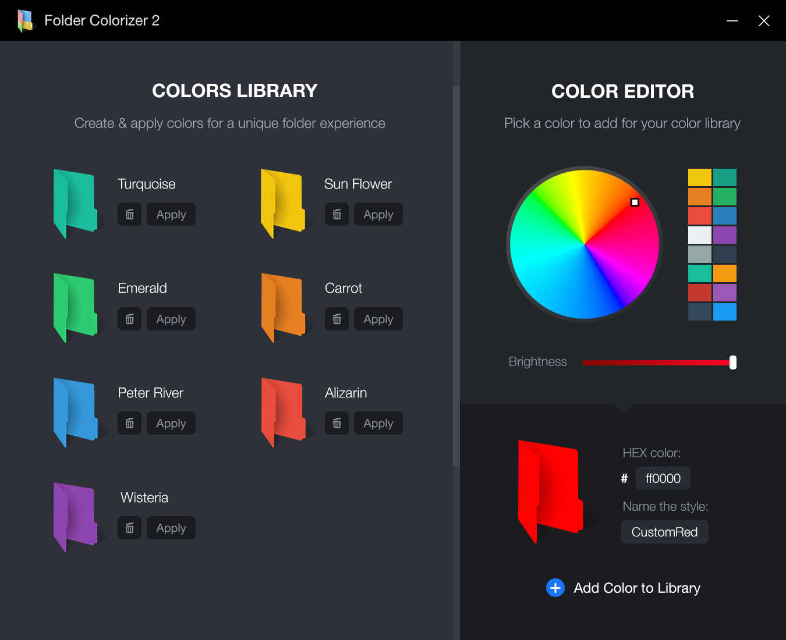

Introducing the 2nd iteration of our critically-acclaimed Folder Colorizer. Originaly introduced in 2011. The innovation in Folder Colorizer was its straightforward user experience - ability to change folder colour in 1-click, as if it's pre-built into the system. Now this seems obvious, but in 2011 it was first of its kind. This tiny detail drew extreme attention & organic popularity to the product. Today, it's reaching 5 million downloads.
We're proud that the original concept & design of Folder Colorizer 2 of setting a new bar for the entire category of compact Windows Utility Software.
Check out Folder Colorizer to add a dab of paint to the place and inject some color and life into the operating system. You may be surprised at the difference in not just your mood, but the efficiency of navigation.
By Mark O'Neil
PCWorld | FEB 12, 2013 2:43 PM PT
Praised by:
Ever wish to change color of folders by type, priority or other labels? It's super hard to do on Windows PC. Our Folder Colorizer 2 introduces a color-changer option in the Context Menu which allows you to simply right click on a folder to change its color. Adding colors to Windows folders doesn't get easier than this.
How can I get Folder Colorizer 2Folder Colorizer 2 goes above & beyond with a built-in color editor. It now includes support for HEX color codes. And with 16-million distinct colours to choose from - applying a personal touch to your folder color is a breeze. As a result, it's so much better when your folder has that equisite shade that you really love.
How can I get Folder Colorizer 2Many a times you just need to identify a particular folder regularly and urgently. How often has it happened that you find your eyes running over all the folder names and yet not being able to find that particular one!? Folder Colorizer 2 helps you distinguish your boring folders.
How can I get Folder Colorizer 2As a result, Folder Colorizer 2 will help you quickly target vital data and research for easy access. The application doesn't effect system performance in a any way the best af all is that it works smoothly on all Windows versions on the market. You don't even need to let the app running in order to keep the new folder colors, so computer performance isn't affected at all.
Windows 10 is a huge step forward! But just like Windows 7 and 8, it won't let you customize your folders. New Folder Colorizer 2 now supports Windows 10 & helps you colourize folders in a matter of seconds. Be sure to read this article to learn the how to change the color of your first folder.:)
All Windows folders are plain yellow, that's why it can be so hard to navigate. The easiest solution is to simply colourize folders on your PC. This 3-step guide will show you exactly how to change folder icon in a single click. In the article you will also learn a few cool tricks to personalize your entire system.
Labeling your folders with different colors is a fun way to stay organized. And with Folder Colorizer 2 it's now easier to change folder icon than ever! Besides this, you can also create your own custom shade and even name it yourself. This all makes Folder Colorizer 2 a cool folder marker app, that helps you arrange folders in a matter of seconds.
Not singed up yet? Join the Folder Colorizer community, and be the first to try our major updates and new software. With your help, we'll strive for a great user experience. Subscribe now, and welcome aboard!
